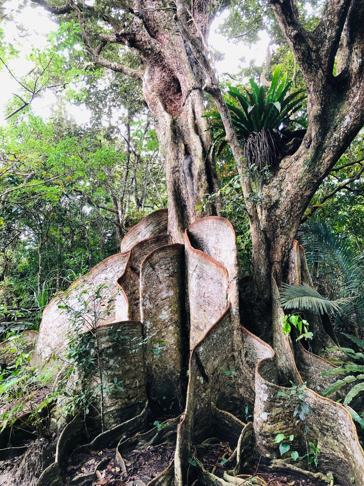
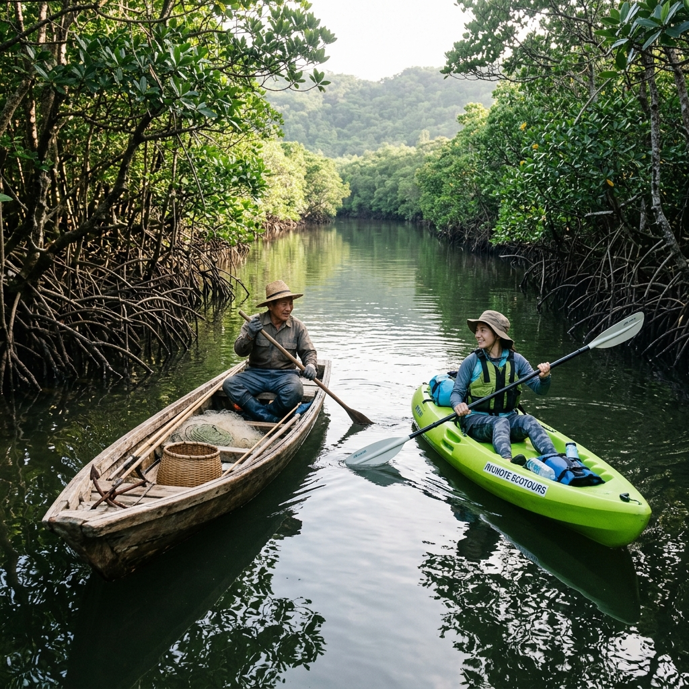

守り、伝える。
日本最大級のマングローブ林
世界自然遺産・西表島の大切な自然環境を未来へと繋ぐため、私たちは「守りながら利用する」持続可能なエコツーリズムを推進しています。
仲間川リアルタイム潮汐 ＆ 利用可能状況
仲間川と保全利用協定について
About Nakama River & The Conservation Agreement
日本最大規模のマングローブ林を未来へ
仲間川は、世界自然遺産・西表島の南東部に位置する、多様な生物を育む豊かな汽水河川です。河口から中流域にかけて広がる日本最大規模のマングローブ林は、多重の厳格な法的指定によって保護されています。
しかし、1990年代後半からの観光急増に伴い、大型観光船のひき波によるマングローブの倒伏被害など、深刻な環境破壊に直面しました。この問題に立ち向かうため、2004年に締結事業者たちが結束し、国内初の画期的な自主規制ルールである「保全利用協定」が誕生しました。
多重の法的保護と世界自然遺産
国立公園、国の天然保護区域、森林生態系保護地域に指定され、ほぼ全域が世界自然遺産の登録区域です。
地域主導の先駆的保全モデル
沖縄振興特別措置法に基づく保全協定の認定第1号であり、2005年には環境省の「エコツーリズム大賞特別賞」を受賞しました。
仲間川の利用ルール ＆ マナー
River Guidelines & Conservation Rules
「守りながら利用する」特別なエコ体験のために
仲間川においても、河川の健全性と利用者の安全を守るための厳格な「仲間川ルール」を定めています。これらの規制は、締結事業者自らのモニタリング調査（砂泥移動や環境DNA）に基づく科学的因果関係に支えられています。
動力船・遊覧船の制限事項
徐行区間（5ノット以下）の厳守
マーラングミ（マングローブ密集地域）より上流は全面徐行です。船のひき波がマングローブの根元の土壌を流出させ、倒伏を引き起こすのを防ぐための最も重要なルールです。
1時間あたり最大10隻までの進入枠
川の過密化と累積的なひき波負荷を最小限に抑えるため、締結事業者の動力船の同時進入隻数を厳しく抑制しています。
追い越し禁止・エコ船の義務化
全区間での追い越しを禁止し、右側通行を徹底。また、ひき波が立ちにくい特別設計の「エコ仕様船」の積極的導入を行っています。
マングローブの倒伏を防ぐため、上流部は全て徐行（5ノット＝時速約9km）で進みます。
カヌー・SUPの利用枠と安全基準
エリア別の1日あたり艇数上限（キャップ制）
・下流エリア：午前・午後それぞれ「50艇（最大100名）」まで
・中流エリア：1日あたり「50艇」まで（※団体利用は禁止）
・上流エリア：1日あたり「20艇」まで（※団体利用は禁止）
ガイド１名につき客数12名以内かつ6艇以内
安心・安全できめ細やかなエコツアーを提供するため、また自然景観の損耗を防ぐため、少人数制を徹底しています。
ライフジャケット着用 ＆ ガイド同伴義務
仲間川の自然体験には、安全のため協定締結事業者のガイド同伴が必須です。事前レクチャーの実施と傷害保険の加入も義務付けられています。
利用者の過密化を避け、静寂な大自然を楽しむため、中上流域の艇数枠は極めて厳格に抑えられています。
自然を守るための共通マナー
動植物の採取・殺傷の全面禁止
世界自然遺産および森林生態系保護地域内でのすべての植物の採取、魚釣り、野生生物の捕獲・干渉は法律および協定で厳しく禁じられています。
ゴミは全て持ち帰り・見つけたゴミの積極的回収
ペットボトルやゴミの投棄は厳禁です。ツアー中に見つけた漂着プラスチック等は、締結事業者が積極的に回収するクリーン活動を行っています。
禁煙の徹底と木道デッキ外への立ち入り禁止
自然休養林内は原則禁煙です。特に上流の巨樹「サキシマスオウノキ」を保護するため、整備された遊歩道の木柵から外の原生林へ踏み込むことは絶対におやめください。

何百年もの歳月をかけて育った巨樹の根元を踏み固めから守るため、木道（デッキ）以外の立ち入りは厳禁です。
地域生活と伝統文化との調和
ガサミ漁（カニ籠）など仕掛けへの不干渉
仲間川は、地元漁業者にとって大切な生活の場（生業のフィールド）でもあります。仕掛けられている漁具には決して触れず、漁船とすれ違う際は必ず最徐行してください。
リュウキュウイノシシ狩猟期間中の注意
毎年11月15日〜翌年2月15日は、西表島の伝統的なイノシシ猟の期間です。誤射などの安全確保および猟師の生業への配慮から、期間中は川沿いの山林エリアへ絶対に立ち入らないでください。

西表島の伝統的な生業とエコツーリズムが共存し、お互いを尊重しあう持続可能な関係を目指しています。
協定締結事業者一覧
Certified Ecotour Operators Directory
締結事業者のツアーを利用する意義
仲間川の豊かなマングローブ林の中で操業を行うツアー事業者は、「仲間川地区保全利用協定」の締結が推奨されています。締結事業者によるツアーを選択していただくこと自体が、仲間川の自然を守る活動への賛同に直結します。ぜひ、ご希望のアクティビティに適合する事業者をお選びください。
学術調査・活動実績報告
Scientific Monitoring & Action Records
蓄積された20年のデータとモニタリング
私たちは協定に基づくルールをただ掲げるだけでなく、その実効性を検証するために専門機関（林野庁西表森林環境保全ふれあいセンター等）の支援のもと、共同でフィールド調査を続けてきました。
3ヶ月ごとの砂泥の移動調査（ひき波による侵食がないかの追跡調査）では、有意な砂泥の流出が見られなくなったため2023年に終了。これは、私たちが徹底した徐行と隻数制限ルールがマングローブの土壌を完璧に保護したことを示す、輝かしい科学的証明です。
ツアー中の漂着ゴミ回収 ＆ 記録管理
締結事業者はツアー中に発見した漂着ゴミの回収を随時行っています。回収したゴミは協定が管理する集積所へ集められ、年に1回データの記録を行って適切に処理・処分しています。
マングローブ幼木とヒルギの成長モニタリング
自然の回復力を測定するため、指定区画におけるマングローブの幼木の成長や種子の定着率などを定期的に観察・記録しています。
仲間川環境DNAデジタル生物図鑑
「環境DNA（コップ1杯の水から生き物を特定する最先端技術）」の学術的な調査成果です。仲間川の豊かな健全性と生物多様性を表す、主要な野生生物のデータを掲載しています。